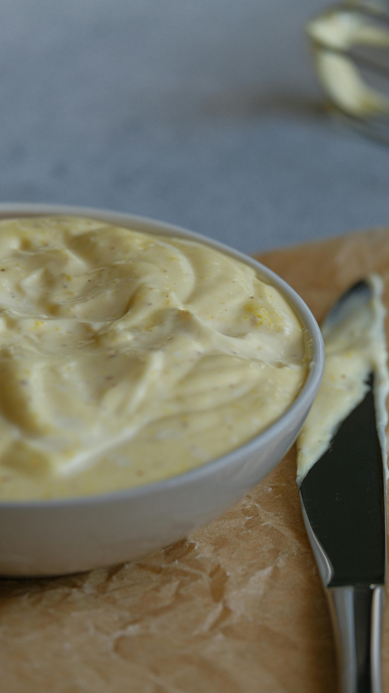

Mayonnaise

Overview
Mayonnaise is a creamy and rich condiment made from emulsifying egg yolks, oil, and vinegar or lemon juice. This versatile sauce can be used in sandwiches, salads, and dressings.
Preparation Time:
- Prep Time: 10 minutes
- Total Time: 10 minutes
Ingredients
- 1 large egg yolk
- 1 tablespoon Dijon mustard (optional)
- 1 tablespoon white vinegar or lemon juice
- 1 cup vegetable oil (or any neutral oil)
- Salt to taste
- Pepper to taste (optional)
Instructions
Step 1: Prepare the Base
- In a mixing bowl, combine the egg yolk, Dijon mustard (if using), and vinegar or lemon juice.
- Whisk together until well combined.
Step 2: Emulsify the Mixture
- While continuously whisking, slowly drizzle in the oil. Start with just a few drops at first to help the emulsification process.
- As the mixture begins to thicken, you can add the oil more quickly while whisking vigorously.
Step 3: Season the Mayonnaise
- Once all the oil is incorporated and the mayonnaise is thick and creamy, season with salt and pepper to taste.
- If desired, adjust acidity by adding more vinegar or lemon juice according to your preference.
Storage Instructions
Transfer the mayonnaise to an airtight container and refrigerate. It can be stored for up to one week.
Enjoy!
Your homemade mayonnaise is ready to enhance your dishes!
Home